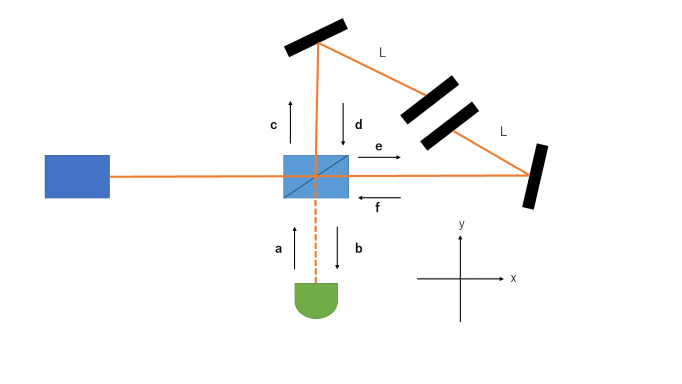
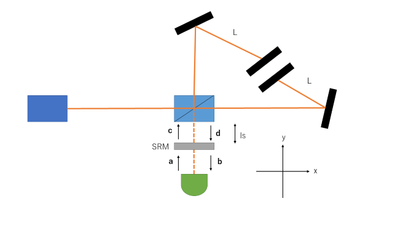
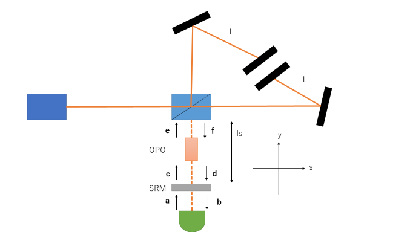

Michelson干渉計の量子雑音
Michelson干渉計の量子雑音について議論します。これを議論するためには、真空状態の揺らぎに対する干渉計の
応答を考える必要があります。そのために、電場を振幅成分と位相成分に分ける直交位相分解を導入します。
直交位相分解を行った電場は以下のように書けます。(詳しい導出は今後書いていきます)
\begin{equation}
E(t,x) = -\frac{1}{2\pi}\sqrt{\frac{\Omega}{\epsilon_0}}[(E(\Omega)+a_1)cos(\Omega t - kx)+a_2 sin(\Omega t -kx)]
\end{equation}
$\Omega = ck$で分散関係を用いています。ここで$a_1 = -i\sqrt{\frac{\hbar}{2}}(a(\boldsymbol{k})-a^{\ast}(\boldsymbol{k}))$と$a_2 = \sqrt{\frac{\hbar}{2}}(a(\boldsymbol{k})+a^{\ast}(\boldsymbol{k}))$
としています。また、以下のようなマイケルソン干渉計を考えています。
腕に折り返し鏡をつけたMichelson干渉計
ここでまず、原点から$x_0$だけ離れた鏡に当たって、帰ってきたキャリア光$E(t,x) = -\frac{1}{2\pi}\sqrt{\frac{\Omega}{\epsilon_0}}E(\Omega)cos(\Omega (t-\frac{2x_0}{c}))$を考える。これが、マイケルソン干渉計に入り、鏡が微小距離$\delta x(t)$だけ変動したとします。
すると光路長が変化するので、位相が$\frac{2\Omega\delta x(t)}{c}$だけ変化します。これを踏まえて計算すると
\begin{align}
E(t,x) &= -\frac{1}{2\pi}\sqrt{\frac{\Omega}{\epsilon_0}}E(\Omega)cos\left[\Omega\left(t-\frac{2x_0}{c}\right)-\frac{2\Omega\delta x(t)}{c}\right] \\
&= -\frac{1}{2\pi}\sqrt{\frac{\Omega}{\epsilon_0}}E(\Omega)\left[cos\Omega\left(t-\frac{2x_0}{c}\right)cos\frac{2\Omega\delta x(t)}{c}+sin\Omega\left(t-\frac{2x_0}{c}\right)sin\frac{2\Omega\delta x(t)}{c}\right] \\
&\approx -\frac{1}{2\pi}\sqrt{\frac{\Omega}{\epsilon_0}}E(\Omega)cos\Omega\left(t-\frac{2x_0}{c}\right)-\frac{1}{2\pi}\sqrt{\frac{\Omega}{\epsilon_0}}E(\Omega)\frac{2\Omega\delta x(t)}{c}sin\Omega\left(t-\frac{2x_0}{c}\right)
\end{align}
となります。ここで、電場の位相成分に注目してください。そこに、鏡が動いた情報$\delta x(t)$があります。つまり、位相成分にキャリアのサイドバンドが発生し、
これをどのように取り出すかが重要になります。(これは後述します)
それでは、Michelson干渉計の応答を考えます。ダークポートから真空場$\boldsymbol{a}$がMichelson干渉計に入ったときのダークポートに現れる$\boldsymbol{b}$との関係は
\begin{equation}
\boldsymbol{b} = \frac{1}{\sqrt{2}}(\boldsymbol{d}-\boldsymbol{f}) = \frac{1}{\sqrt{2}}(\boldsymbol{c}-\boldsymbol{e})e^{i\frac{2L\omega}{c}}=\boldsymbol{a}e^{i\frac{2L\omega}{c}}
\end{equation}
となります。ここで、真空場は振幅成分と位相成分で分けたベクトルとして扱っています。
これは、固定された鏡の時です。鏡がつるされている場合、ダークポートから入射した真空場の影響で鏡を揺らし、位相成分にサイドバンドが発生し
(輻射圧雑音)、周波数帯によっては$\boldsymbol{a}$と$\boldsymbol{b}$は異なります。このサイドバンドを計算したいです。先ほども述べましたが、Michelson干渉計のサイドバンドは
位相成分に発生します。今y軸方向を考え、2つの鏡それぞれの微小変化を$\delta Y_1$,$\delta Y_2$とします。すると、発生するサイドバンドは
\begin{align}
E_{SB,y} &= \frac{2\Omega E}{c}(\delta Y_1 e^{i\frac{L\omega}{2c}}+\delta Y_2 e^{i\frac{L\omega}{c}}+\delta Y_1 e^{i\frac{3L\omega}{2c}}) \\
&= \frac{2\Omega E}{c}[(\delta Y_1 e^{-i\frac{L\omega}{2c}}+\delta Y_1 e^{i\frac{L\omega}{2c}})e^{i\frac{L\omega}{c}}+\delta Y_2 e^{i\frac{L\omega}{c}}] \\
&\approx \frac{2\Omega E}{c}(2\delta Y_1 + \delta Y_2)e^{i\frac{L\omega}{c}}
\end{align}
と計算できる。ただし$1>>\frac{L\omega}{2c}$としました。次に、鏡の微小変化$\delta Y_1$と$\delta Y_2$を求める。
真空場が入っていない状態(定常状態)での2枚の鏡の運動方程式は
\begin{align}
m\frac{d^2 y_1(t)}{dt^2} &= 2f_{rad} - f_{res,1}(=0) \\
m\frac{d^2 y_2(t)}{dt^2} &= f_{rad} - f_{res,2}(=0) \\
\end{align}
となります。ここで、鏡にかかる古典的な輻射圧を$f_{rad}$、振り子の復元力を$f_{res,i}(i=1,2)$とした。これらは釣り合っているものとします。
また、鏡の位置をそれぞれ$y_1$と$y_2$としました。まずは$f_{rad}$を求めたいです。これは以下のように求まります。
\begin{align}
f_{rad} &= 2\hbar k \times \frac{P}{\hbar \Omega}\\
P &= \frac{1}{2}\hbar\Omega E^2\\
f_{rad} &= 2\frac{kP}{\Omega} \\
&= \frac{\hbar\Omega E^2}{c}\\
\end{align}
ここで、Pはレーザー光のパワーで、$E^2$は古典的な光子の数、$\frac{1}{2}$はビームスプリッターの影響を考慮しています。
ここに真空場が侵入してきたとき、輻射圧の微小変化は$\delta f_{rad} = \frac{2\hbar\Omega E}{c}\delta E = \frac{2\hbar\Omega E}{c}c_1$となります。(これは$\delta E$が真空場$\boldsymbol{c}$の振幅成分であることを用いました)
よって定常状態での運動方程式は
\begin{align}
m\frac{d^2 y_1(t)}{dt^2} &= (f_{rad}+\delta f_{rad})+(f^{'}_{rad}+\delta f^{'}_{rad})-f_{res,1} \\
&= \delta f_{rad} + \delta f^{'}_{rad}\\
&= \frac{2\hbar\Omega E}{c}c_1 e^{i\frac{L\omega}{2c}}+\frac{2\hbar\Omega E}{c}c_1 e^{i\frac{3L\omega}{2c}}\\
&= \frac{2\hbar\Omega E}{c}c_1(e^{-i\frac{L\omega}{2c}}-e^{i\frac{L\omega}{2c}})c^{i\frac{L\omega}{c}}\\
&\approx \frac{4\hbar\Omega E}{c}c_1e^{i\frac{L\omega}{c}}(1>>\frac{L\omega}{2c})\\
m\frac{d^2 y_2(t)}{dt^2} &= f_{rad}+\delta f_{rad}-f_{res,2}\\
&= \delta f_{rad}\\
&= \frac{2\hbar\Omega E}{c}c_1 e^{i\frac{L\omega}{c}}\\
\end{align}
また、$y_1$には重力波による変位$\frac{L}{4}\frac{d^2 h(t)}{dt^2}$も加わるので
\begin{equation}
m\frac{d^2 y_1(t)}{dt^2} = \frac{4\hbar\Omega E}{mc}c_1 e^{i\frac{L\Omega}{c}}+\frac{L}{4}\frac{d^2 h(t)}{dt^2}
\end{equation}
となります。
今まで、ずっと時間空間で議論を進めてきましたが、求めたい変位は周波数空間なので、この2つの微分方程式をフーリエ変換します。
\begin{align}
-\omega^2\delta Y_1 &= \frac{4\hbar\Omega}{mc}Ec_1 e^{i\frac{L\omega}{c}}+\frac{L}{4}(-\omega^2 h(\omega)) \\
\delta Y_1 &= -\frac{4\hbar\Omega E}{mc\omega^2}c_1 e^{i\frac{L\omega}{c}}+\frac{L}{4}h(\omega)\\
-m\delta Y_2\omega^2 &= \frac{2\hbar\Omega}{c}Ec_1e^{i\frac{L\omega}{c}}\\
\delta Y_2 &= -\frac{2\hbar\Omega E}{mc\omega^2}c_1 e^{i\frac{L\omega}{c}}\\
\end{align}
ここまでで、準備は整いました。あとは、発生したサイドバンドの式に代入すれば
\begin{equation}
E_{SB,y} = \frac{2\Omega E}{c}\left(-\frac{10\hbar\Omega E}{mc\omega^2}c_1 e^{i\frac{L\omega}{c}}+\frac{L}{2}h(\omega)\right)e^{i\frac{L\omega}{c}}
\end{equation}
と求めることができます。同様に、x軸方向で発生するサイドバンド$E_{SB,x}$も求めることができます。結果だけ以下に示しておきます。
\begin{equation}
E_{SB,x} = \frac{2\Omega E}{c}\left(-\frac{10\hbar\Omega E}{mc\omega^2}e_1 e^{i\frac{L\omega}{c}}-\frac{L}{2}h(\omega)\right)e^{i\frac{L\omega}{c}}
\end{equation}
よって真空場$\boldsymbol{b}$は
\begin{align}
\boldsymbol{b} &= \frac{1}{\sqrt{2}}[(\boldsymbol{c}-\boldsymbol{e})e^{i\frac{2L\omega}{c}}+(E_{SB,y}-E_{SB,x})\boldsymbol{e}_{phase}]\\
&= \boldsymbol{a}e^{i\frac{2L\omega}{c}}-\frac{20\hbar\Omega^2 E^2}{mc^2\omega^2}a_1 e^{i\frac{L\omega}{c}}\boldsymbol{e}_{phase}+\frac{\sqrt{2}L\Omega E}{c}e^{i\frac{L\omega}{c}}\boldsymbol{e}_{phase}
\end{align}
と書けます。この式をさらにまとめると
\begin{align}
\boldsymbol{b} = \boldsymbol{a}e^{2i\beta}-K a_1 e^{2i\beta}\boldsymbol{e}_{phase}+\frac{\sqrt{2K}}{h_{SQL}}h(\omega)e^{i\beta}\boldsymbol{e}_{phase}
\end{align}
となります。ここで、$K = \frac{20\Omega P}{mc^2\omega^2}$,$h_{SQL} = \sqrt{\frac{20\hbar}{mL^2\omega^2}}$,$\beta = \frac{L\omega}{c}$と各パラメータを定義しました。
このことにより、鏡が真空場の輻射圧に揺らされ、ダークポートに出てくる真空場が変化することがわかりました。このように、3つのパラメータが導出過程で登場したが、
特に$h_{SQL}$を標準量子限界といい、Michelson干渉計の差動変位の測定限界を表します。具体的には、上記の式から量子雑音に対する差動変位の感度$\sqrt{S_h}$を求めると
\begin{equation}
\sqrt{S_h} = \sqrt{\frac{1+K^2}{2K}}h_{SQL} \geq h_{SQL}
\end{equation}
となり、$h_{SQL}$よりも小さい差動変位は量子雑音に埋もれてしまい測定できないのです。
シグナルリサイクリング干渉計の量子雑音
続いて、Michelson干渉計の入出力関係を用いてシグナルリサイクリング干渉計の量子雑音を考察していきます。
これはMichelson干渉計にSR鏡を取りつけ、信号を干渉計内に打ち返すといったものになります。
シグナルリサイクリング干渉計
まず、Michelson干渉計の真空場における入出力関係は以下のように書けます。
\begin{equation}
\boldsymbol{d} = \boldsymbol{c}e^{2i\beta}-K c_1 e^{2i\beta}\boldsymbol{e}_{phase}+\frac{\sqrt{2K}}{h_{SQL}}h(\omega)e^{i\beta}\boldsymbol{e}_{phase}
\end{equation}
一方で発生したサイドバンドがBSとSRM間を進む際に、干渉計内部で定義されてた位相・振幅成分と共振器内を往復した位相・振幅成分にはずれが生じる。
このずれを回転行列$\boldsymbol{R}(\theta)$で表すことができます。
これを考慮して各入出力関係を求めると
\begin{align}
\boldsymbol{b} &= t_s e^{i\alpha}\boldsymbol{R}(\phi)\boldsymbol{d}-r_s \boldsymbol{a}\\
\boldsymbol{c} &= r_s e^{2i\alpha}\boldsymbol{R}(2\phi)\boldsymbol{d}+t_s e^{i\alpha}\boldsymbol{R}(\phi)\boldsymbol{a}\\
\end{align}
となる。この3つの式より$\boldsymbol{a}$と$\boldsymbol{b}$の関係を求めると
\begin{equation}
\boldsymbol{b} = \frac{1}{M}{e^{2i(\alpha+\beta)}\boldsymbol{A}\boldsymbol{a}+\sqrt{2K}t_s e^{i(\alpha+\beta)}\boldsymbol{H}\frac{h(\omega)}{h_{SQL}}}
\end{equation}
となります。各パラメータの詳細は割愛します。$\alpha=\frac{l_s \omega}{c}$で、$\phi$はキャリア光に対するSRMからBSまでの位相を表している。
SR共振器が共振しているとき($\phi = 2\pi$)、位相成分にサイドバンドが発生するので、位相成分の入出力関係からSR干渉計の感度は$\sqrt{S_h}=\sqrt{\frac{|A_{21}|^2+|A_{22}|^2}{2T_s|H_s|^2 K}}h_{SQL}(t^2_s = T_s)$と計算できます。
もちろんSR鏡が無ければ、Michelson干渉計のそれと同じになります。共振したSR干渉計はSR共振器で信号を打ち返すため、Michelson干渉計より高周波で感度が向上します。
しかし、高周波数帯ではSR共振器内で信号が弱めあってしまうため、感度が悪化してしまうのです。どちらにせよ共振したSR干渉計ではSQLを超えることはできません。
ここで、SR共振器を離調することでSQLを超えることができるようになります。この時、ディップが2つできますが、今回は低周波数側にあるディップ(SR共振器と干渉計からなる複合共振器の光バネの共振周波数に近い)の周波数を求めていきます。
先ほど求めた感度の式に注目します。$|H_2|$は周波数によらず一定なので、ディップを持ちません。一方で、$|A_{21}|^2+|A_{22}|^2$は周波数依存性があるので、
こちらに注目すれば求めたいディップの周波数を求めることができます。感度が最小になるところがディップの位置になるので、感度の式から$|A_{21}|^2=0$か$|A_{22}|^2=0$を満たせばいいことがわかります。
まず、$|A_{21}|^2=0$の場合を考えます。この時、$T_s|sin2\phi - Kcos^2 \phi|=0$であるから、これを満たすには$sin2\phi - Kcos^2 \phi = 0$を計算すればよいです。
\begin{align}
2sin\phi cos\phi &= Kcos^2 \phi\\
2 &= K\frac{1}{tan\phi}\\
&= \frac{20\Omega P}{mc^2\omega^2}\frac{1}{tan\phi}\\
\omega^2 &= \frac{10\Omega P}{mc^2 tan\phi}\\
\omega &= \sqrt{\frac{10\Omega P}{mc^2 tan\phi}}\\
f &= \frac{1}{2\pi}\sqrt{\frac{10\Omega P}{mc^2 tan\phi}}
\end{align}
するとこのようにディップの周波数を求めることができました。同じように、$|A_{22}|^2=0$を計算すると、だいたいfと同じになりますが、
わずかにずれていることによって、ディップがなまってしまいます。ただし、ここではディップの周波数はfとします。
SR鏡の反射率を小さくすることによってディップが消失してしまいます。これは光ばねに減衰力が働き、共振のQ値が低下したことに起因しています。
あとは、このディップを高周波数帯にシフトできれば良いです。具体的には、先ほど求めたディップの周波数の式より、
「離調角を調整する」「レーザーパワーを上げる」「鏡の質量を軽くする」などがあります。これらは、設計上大きくシステムを変更しなければいけなくなり、とても困難です。
そこで、非線形光学結晶を用いた手法を導入します。
非線形光学効果を用いたシグナルリサイクリング干渉計の量子雑音
ここではシグナルリサイクリング干渉計に非線形光学効果を導入することで、変更される干渉計のダイナミクスについて見ていきたいと思います。
以下にシグナルリサイクリング干渉計に非線形素子(OPO)を挿入した干渉計を示します。
非線形光学素子を用いたシグナルリサイクリング干渉計
OPOは以下のように共振器内の真空場を変化させます。
\begin{equation}
\boldsymbol{d}=
\begin{pmatrix}
s&&0 \\
0&&{1/s} \\
\end{pmatrix}
\boldsymbol{f}
\end{equation}
これは、ある成分は最大になり、その成分に直交する成分は最小になる効果があります。これをスクイージングと呼びます。
残りの真空場の関係も今まで同様に求めておきます。
\begin{align}
\boldsymbol{f} &= e^{2i\beta}
\begin{pmatrix}
1&&0\\
{-\kappa}&&1
\end{pmatrix}
\boldsymbol{e}+\frac{\sqrt{2\kappa}}{h_{SQL}}e^{i\beta}h(\omega)\boldsymbol{e}_{phase}\\
\boldsymbol{c} &= r_s e^{2i\alpha}
\begin{pmatrix}
{cos2\phi}&&{-sin2\phi}\\
{sin2\phi}&&{cos2\phi}
\end{pmatrix}
\boldsymbol{d}+t_s e^{i\alpha}
\begin{pmatrix}
{cos\phi}&&{-sin\phi}\\
{sin\phi}&&{cos\phi}
\end{pmatrix}
\boldsymbol{a}\\
\boldsymbol{b} &= t_s e^{i\alpha}
\begin{pmatrix}
{cos\phi}&&{-sin\phi}\\
{sin\phi}&&{cos\phi}
\end{pmatrix}
\boldsymbol{d}-r_s\boldsymbol{c}\\
\end{align}
OPOは方向依存性があり、$\boldsymbol{f}$から$\boldsymbol{d}$に対してはスクイージング効果がありますが、
$\boldsymbol{c}$から$\boldsymbol{e}$に対しては何も起こしません。よって
\begin{equation}
\boldsymbol{c}=\boldsymbol{e}
\end{equation}
となります。これらの式をまとめて計算すると
\begin{equation}
\boldsymbol{b}=\frac{1}{M}\left[e^{2i(\alpha+\beta)}\boldsymbol{A}\boldsymbol{a}+\sqrt{2\kappa}t_s e^{i(\alpha+\beta)}\boldsymbol{H}\frac{h(\omega)}{h_{SQL}}\right]
\end{equation}
となります。この式から感度$\sqrt{S_h}$を計算します。
\begin{equation}
\sqrt{S_h} = \sqrt{\frac{|A_{11}+A_{22}|^2+|A_{21}+A_{22}|^2}{2T_s(|H_1|^2+|H_2|^2)\kappa}h_{SQL}}
\end{equation}
ここから低周波数側のディップの周波数を求めます。(低周波数側と高周波数側の2つのディップができます)また、計算の過程で出てきた各パラメータの詳細は省略します。
感度が最小にするには、$|A_{11}+A_{22}|=0$か$|A_{12}+A_{21}|=0$
を計算すれば良いです。この計算結果がディップの周波数となります。以下にその計算結果を示します。
\begin{equation}
f_{dip} = f_{|A_{12}+A_{22}|=0} = f_{|A_{11}+A_{21}|=0} = \sqrt{\frac{20P\Omega}{mc^2}}\sqrt{\frac{sin2\phi}{-(1+s^2)cos2\phi+2s}}
\end{equation}
sはスクイージングファクタです。ここで、OPOのゲインを$G_{OPO} = -20log_{10}s[dB]$と定義します。
この式から$G_{OPO}$が大きくなるとsは小さくなることがわかります。よって$G_{OPO}$を大きくすれば$f_{dip}$をより高周波数側に移動することができます。
ここでは以下のように定義されるホモダイン角は45度としています。
\begin{equation}
\xi = arctan\left(\frac{A_2}{A_1}\right)
\end{equation}
OPOを導入したことによって量子限界を突破することができ、従来の干渉計設計をほぼ変えずに重力波検出器の高周波数帯の感度を改善することができるようになりました。